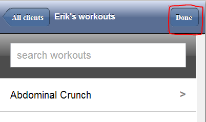
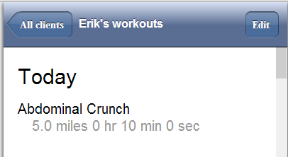
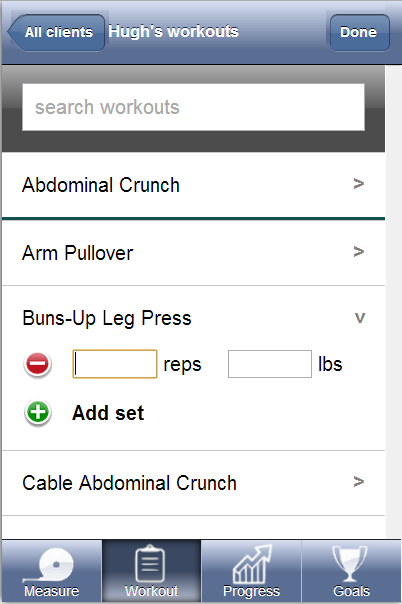
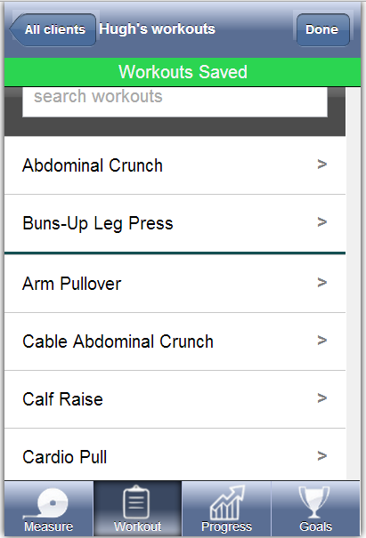

We decided to enhance the visual design of the application by changing the color, font, and icon images.Although this does not influence functionality of the app, it does make it more visually appealing. The new colors and fonts create a more dynamic and engaging platform, while updated icons help clarify a button’s function. The new color, fonts, and icons will also contribute to a more uniform visual design, which addresses a piece of feedback we received in our heuristic evaluation.
In our heuristic evaluation, our evaluators felt that the display and organization of the workouts was not ideal. The feedback said that the lists were too long, requiring a lot of scrolling. They also mentioned that it did not adhere to iOS guidelines, which we feel that it actually does follow. We decided not to change this.
When we first started designing, we had tested out different ways of searching for exercises. For example, we had options to search but touching parts on an image of a body but users never used it and were unsure of what it even was.
Personal trainers will recognize the list of workouts that the prototype provides and it won’t impact its ease of use. Furthermore, the time we invest in determining different ways to organize lists, body parts etc will be disproportionate the to value added to the application.
Most of the feedback we received in the heuristic evaluation demonstrated the fact that our prototype did not give users sufficient feedback when they submitted new information. The way users could view the workouts they added was after pressing the high-level “Done” button once they’ve added several workouts, which should not have been necessary. Per the feedback we received, we overhauled the add workout page.
 We added a grey divider between workouts that were already added today, and workouts that haven’t been added yet. When a workout is added, a notification appears above the workout list indicating that the workout is saved, and the workout moves above the grey divider. We’re also going to implement a text indicator within the list item for the workout, indicating how many sets were added.
 In our heuristic evaluation, our evaluators have difficulty in editing workouts. When prompted to edit, they were being sent to a page with a list of workouts instead of the list of exercises already logged. We originally had a unique set of actions on this page, but decided not to implement this action in order to save time. However, in order to allow users to get through some of our tasks, we will implement this action on the workout summary screen.
Our experiments vary controls on the page, and for each one, we gather answers to the following four questions:
For our experiment, we wanted to find ways that could help improve our method of recording and saving logging workouts. In our experiment design, we want to test the effects of having done buttons, “saved” notifications, and appearance of textboxes on the user’s confidence and the time needed to complete their task all while still feeling like they had the option to edit. We hypothesize that having checkboxes and text boxes while not having a done button or “saved” notification will produce the optimal version. We will see how these variations and combinations affect our response variables, how confident the user feels that the data they inputted was saved and how much time it took the user to complete the entire task but the user should still feel like she can edit from that same screen. Our control will be our current combination of these x variables. Currently, we have a done button and textboxes and nothing else. Below, we have created a table of the responses that we expect to find in our varying our x factors and combinations of these x factors:
| Done Button | "Saved" Notification | Green Check Notification | Textboxes Around Input | |
| confident that saved bc actively said to save, take a longer time because added tasks of tapping “done”. not sure how to edit because textboxes gone | confident because told so, long time because it pauses you before continuing on to next task. not sure how to edit because textboxes gone | confident saved because told so for each item. no extra time bc no extra steps not sure how to edit because textboxes gone | unsure if saved because looks like can still edit, short time because no extra steps just uncertainty. sure can edit because textboxes are still there | |
| Done | X | super confident that saved, annoyed, and long time because 2 extra steps | confident saved because told so for each item and had to actively save. added tasks of tapping “done”. not sure how to edit because textboxes gone | fairly confident that saved bc actively said to save but not completely confident because textboxes still apparent, a bit long because some doubt so move slower and then extra step of saying done |
| Notification | very confident because told so and actively had to do it and textboxes disappear. take a longer time because added | X | confident because told so, long time because it pauses you before continuing on to next task. not sure how to edit because textboxes | fairly confident because told so but unsure because looks like can still edit, long time because it pauses you before continuing on to next task |
| Green Check | very confident because told so and actively had to do it and textboxes disappear. longer time because added tasks of tapping “done” | X | X | confident saved because told so for each item. no extra time bc no extra steps.sure can edit because textboxes are still there |
| Combo of Three | notification+green+text sure saved because extra pop up said so and green check next to each one. and can edit because of box | done +green+text confident saved because told so for each item. can edit. extra time because of extra button | done+notification+green extra time because of extra button and pop up. confident saved bc multiple indicators. not sure if can edit bc no box | done+notification+text confident can edit. sure saved because extra steps |
| All Four | confident because actively said done and got a notification but maybe some doubt because textboxes indicated can still edit but not really because the green checks will say that it is saved. very long time because multiple extra steps | done +green+text confident saved because told so for each item. can edit. extra time because of extra button |
Each subject would do five iterations of the adding, saving, and editing workouts, each time with a different random combination of the variable factors. There are 16 different variations to test, so by having them complete five, they will help us get data for most of the variations while controlling for possible individual differences. We will not ask them to do all eight because that will become too repetitive for them and would take too much of the subject’s time. We will also give each subject variable combinations in a random order to control for possible ordering effects as well as familiarity biases.
For example, Joanne would get a "done" button, and checkbox notifications on her first test, and on Robert's first test, he would get a "saved" notification, have no "done" button, and see textbox borders disappear after going to the next one. Our team has no prior experience in the design of controlled experiments, so we not only will take away useful design information from this test, but we will also apply what we learn in future experiments we may do outside of class. It will be interesting to understand how much and what types of reassurance users need in trusting that the program has saved their data inputs.